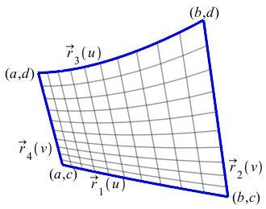
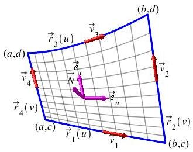

Let \(S\) be a nice surface in \(\mathbb{R}^3\) with a nice properly
oriented boundary, \(\partial S\), and let \(\vec{F}\) be a nice vector
field on \(S\). Then
\[
\iint_S \vec{\nabla}\times\vec{F}\cdot d\vec{S}
=\oint_{\partial S} \vec{F}\cdot d\vec{s}
\]
Each piece of the boundary of the surface must be traversed counterclockwise
as seen from the tip of the normal vector to the surface.
c. Proof
We will only prove Stokes' Theorem for surfaces without holes. For a surface
with holes, we cut up the surface into pieces without holes and add the
results for all the pieces.
Overview
We assume the surface \(S\) is parametrized by:
\[\begin{aligned}
\vec R(u,v)
=\left(x(u,v),y(u,v),z(u,v)\right) \\
\text{for} \quad
a \le u \le b
\quad \text{and} \quad
c \le v \le d
\end {aligned}\]
The plot below is not as pretty, but you can rotate it with your mouse.

We write the vector function \(\vec{F}\) as:
\[
\vec{F}=\left\langle P(x,y,z),Q(x,y,z),T(x,y,z)\right\rangle
\]
We will prove the theorem for the case that
\(\vec{F}=\langle P,0,0\rangle\). Totally analogous proofs work for the other two cases
\(\vec{F}=\langle 0,Q,0\rangle\) and \(\vec{F}=\langle 0,0,T\rangle\).
They are assigned as
exercises.
The general result is then just the sum of the three special cases.
Proof of the \(P\) Piece
To carry out the proof for \(\vec{F}=\langle P,0,0\rangle\), we
evaluate the left and right hand sides to see they are equal.
LHS:
To compute the integral on the left, we first evaluate the curl of
\(\vec{F}\):
\[\begin{aligned}
\vec{\nabla}\times\vec{F}
&=\begin{vmatrix}
\hat{\imath} & \hat{\jmath} & \hat{k} \\
\partial_x & \partial_y & \partial_z \\
P & 0 & 0
\end{vmatrix}
=\hat{\imath}(0)-\hat{\jmath}(-\partial_z P)+\hat{k}(-\partial_y P) \\
&=\langle 0,\partial_z P,-\partial_yP\rangle
\end {aligned}\]
and express the vector differential of surface area, \(d\vec{S}\), in terms of
Jacobians:
\[
d\vec{S}=\vec{N}\,du\,dv
=\left\langle\dfrac{\partial(y,z)}{\partial(u,v)},
\dfrac{\partial(z,x)}{\partial(u,v)},
\dfrac{\partial(x,y)}{\partial(u,v)}\right\rangle\,du\,dv
\]
Then we compute the dot product, write out the Jacobians, and rearrange
the terms:
\[\begin{aligned}
\iint_S &\vec{\nabla}\times\vec{F}\cdot d\vec{S}
=\iint_S \langle0,\partial_z P,-\partial_y P\rangle
\cdot\left\langle\dfrac{\partial(y,z)}{\partial(u,v)},
\dfrac{\partial(z,x)}{\partial(u,v)},
\dfrac{\partial(x,y)}{\partial(u,v)}\right\rangle\,du\,dv \\
&=\int_c^d\int_a^b
\left(\dfrac{\partial P}{\partial z}\dfrac{\partial(z,x)}{\partial(u,v)}
-\dfrac{\partial P}{\partial y}\dfrac{\partial(x,y)}{\partial(u,v)}\right)\,du\,dv \\
&=\int_c^d\int_a^b
\left[\dfrac{\partial P}{\partial z}
\left(\dfrac{\partial z}{\partial u}\dfrac{\partial x}{\partial v}
-\dfrac{\partial z}{\partial v}\dfrac{\partial x}{\partial u}\right)
-\dfrac{\partial P}{\partial y}
\left(\dfrac{\partial x}{\partial u}\dfrac{\partial y}{\partial v}
-\dfrac{\partial x}{\partial v}\dfrac{\partial y}{\partial u}\right)\right]\,du\,dv \\
&=\int_c^d\int_a^b
\left[-\,\dfrac{\partial x}{\partial u}
\left(\dfrac{\partial P}{\partial z}\dfrac{\partial z}{\partial v}
+\dfrac{\partial P}{\partial y}\dfrac{\partial y}{\partial v}\right)
+\dfrac{\partial x}{\partial v}
\left( \dfrac{\partial P}{\partial z}\dfrac{\partial z}{\partial u}
+\dfrac{\partial P}{\partial y}\dfrac{\partial y}{\partial u}\right)\right]\,du\,dv
\end{aligned}\]
The expressions in parentheses are almost the \(v\) and \(u\) derivatives
of \(P\) but they are each missing a term. So we subtract and add the term
\(\dfrac{\partial P}{\partial x}\dfrac{\partial x}{\partial v}
\dfrac{\partial x}{\partial u}\), putting
\(\dfrac{\partial P}{\partial x}\dfrac{\partial x}{\partial v}\)
inside the first parentheses and putting
\(\dfrac{\partial P}{\partial x}\dfrac{\partial x}{\partial u}\)
inside the second parentheses. Then inside each parenthesis we have
chain rules for derivatives of \(P\circ\vec R\).
\[\begin{aligned}
\iint_S \vec{\nabla}\times\vec{F}\cdot d\vec{S}
&=\int_c^d\int_a^b
\left[-\,\dfrac{\partial x}{\partial u}
\left(\dfrac{\partial P}{\partial z}\dfrac{\partial z}{\partial v}
+\dfrac{\partial P}{\partial y}\dfrac{\partial y}{\partial v}
+\dfrac{\partial P}{\partial x}\dfrac{\partial x}{\partial v}\right)\right. \\
&\qquad\qquad\left.+\dfrac{\partial x}{\partial v}
\left( \dfrac{\partial P}{\partial z}\dfrac{\partial z}{\partial u}
+\dfrac{\partial P}{\partial y}\dfrac{\partial y}{\partial u}
+\dfrac{\partial P}{\partial x}\dfrac{\partial x}{\partial u}\right)\right]\,du\,dv \\
&=\int_c^d\int_a^b
\left(-\dfrac{\partial x}{\partial u}
\dfrac{\partial P\circ\vec{R}}{\partial v}
+\dfrac{\partial x}{\partial v}
\dfrac{\partial P\circ\vec{R}}{\partial u}\right)\,du\,dv
\end{aligned}\]
We now subtract and add the term
\(\dfrac{\partial^2x}{\partial u\partial v}(P\circ\vec{R})\)
so that each term becomes a product rule:
\[\begin{aligned}
\iint_S \vec{\nabla}\times\vec{F}\cdot d\vec{S}
&=\int_c^d\int_a^b
\left(-\dfrac{\partial x}{\partial u}\dfrac{\partial P\circ\vec{R}}{\partial v}
-\dfrac{\partial^2x}{\partial u\partial v}(P\circ \vec{R})\right. \\
&\qquad\qquad\quad\left.+\dfrac{\partial x}{\partial v}\dfrac{\partial P\circ\vec{R}}{\partial u}
+\dfrac{\partial^2x}{\partial u\partial v}(P\circ\vec{R})
\right)\,du\,dv \\
&=\int_c^d\int_a^b
\left(-\dfrac{\partial }{\partial v}
\left(\dfrac{\partial x}{\partial u}\,P\circ\vec{R}\right)
+\dfrac{\partial}{\partial u}
\left(\dfrac{\partial x}{\partial v}\,P\circ\vec{R}\right)\right)\,du\,dv
\end{aligned}\]
In the first term we interchange the order of integration so that the
Fundamental Theorem of Calculus can be applied to both terms:
\[\begin{aligned}
\iint_S \vec{\nabla}\times\vec{F}\cdot d\vec{S}
&=-\int_a^b\int_c^d
\dfrac{\partial}{\partial v}\left(\dfrac{\partial x}{\partial u}P\circ\vec{R}\right)\,dv\,du
+\int_c^d\int_a^b
\dfrac{\partial}{\partial u}\left(\dfrac{\partial x}{\partial v}P\circ\vec{R}\right)\,du\,dv \\[5pt]
&=-\int_a^b
\left[\dfrac{\partial x}{\partial u}P\circ\vec{R}\right]_{(u,v)=(u,c)}^{(u,v)=(u,d)}\,du
+\int_c^d
\left[\dfrac{\partial x}{\partial v}P\circ\vec{R}\right]_{(u,v)=(a,v)}^{(u,v)=(b,v)}\,dv
\end{aligned}\]
Finally, we evaluate the functions and reorder the integrals:
\[\begin{aligned}
\iint_S \vec{\nabla}\times\vec{F}\cdot d\vec{S}
&=\int_a^b P\left(\vec{R}(u,c)\right)\dfrac{\partial x}{\partial u}(u,c)\,du
+\int_c^d P\left(\vec{R}(b,v)\right)\dfrac{\partial x}{\partial v}(b,v)\,dv \\
&-\int_a^b P\left(\vec{R}(u,d)\right)\dfrac{\partial x}{\partial u}(u,d)\,du
-\int_c^d P\left(\vec{R}(a,v)\right)\dfrac{\partial x}{\partial v}(a,v)\,dv
\end{aligned}\]
We now want to see that this is the same as the integral on the right.
RHS:
To evaluate the right side of the equation, we must evaluate the integral
over the closed curve which is the boundary of the surface, which in fact
consists of four pieces: two \(u\)-curves and two \(v\)-curves.
\[\begin{aligned}
\vec{r}_1(u)&=\vec{R}(u,c)=\left(x(u,c),y(u,c),z(u,c)\right) \\
&a \lt u \lt b \\
\vec{r}_2(v)&=\vec{R}(b,v)=\left(x(b,v),y(b,v),z(b,v)\right) \\
&c \lt v \lt d \\
\vec{r}_3(u)&=\vec{R}(u,d)=\left(x(u,d),y(u,d),z(u,d)\right) \\
&a \lt u \lt b \\
\vec{r}_4(v)&=\vec{R}(a,v)=\left(x(a,v),y(a,v),z(a,v)\right) \\
&c \lt v \lt d
\end{aligned}\]
The plot below is not as pretty, but you can rotate it with your mouse.

As in the proof of Green's Theorem, we must travel counterclockwise around
the boundary curve but this time as seen from the tip of the normal
\(\vec{N}\). If we put our eye at the tip of \(\vec{N}=\vec{e}_u\times\vec{e}_v\),
we can rotate our head so that \(\vec{e}_u\) points to the right and
\(\vec{e}_v\) points up. Then the \(u\)-coordinate increases from left to right and
the \(v\)-coordinate increases from bottom to top. To implement the
counterclockwise orientation, we must reverse the directions of
\(\vec{r}_3\) and \(\vec{r}_4\), which we will do by simply putting a minus sign in
front of their integrals. So the integral on the right is:
\[
\oint_{\partial S} \vec{F}\cdot d\vec{s}
=\int_{\vec{r}_1} P\,dx+\int_{\vec{r}_2} P\,dx
-\int_{\vec{r}_3} P\,dx-\int_{\vec{r}_4} P\,dx
\]
To evaluate these integrals, we must evaluate the function, \(P\), and the
differential, \(dx\), on each curve:
\[\begin{aligned}
\oint_{\partial S} \vec{F}\cdot d\vec{s}
&=\int_a^b P\left(\vec{R}(u,c)\right)\dfrac{\partial x}{\partial u}(u,c)\,du
+\int_c^d P\left(\vec{R}(b,v)\right)\dfrac{\partial x}{\partial v}(b,v)\,dv \\
&-\int_a^b P\left(\vec{R}(u,d)\right)\dfrac{\partial x}{\partial u}(u,d)\,du
-\int_c^d P\left(\vec{R}(a,v)\right)\dfrac{\partial x}{\partial v}(a,v)\,dv
\end{aligned}\]
This is the same result we found on the left side. So the theorem is proved
for the case that \(\vec{F}=\langle P,0,0\rangle\). Totally
analogous proofs work for the other two cases
\(\vec{F}=\langle0,Q,0\rangle\) and \(\vec{F}=\langle0,0,T\rangle\).
They are assigned as
exercises.
The general result is then just the sum of the three special cases.